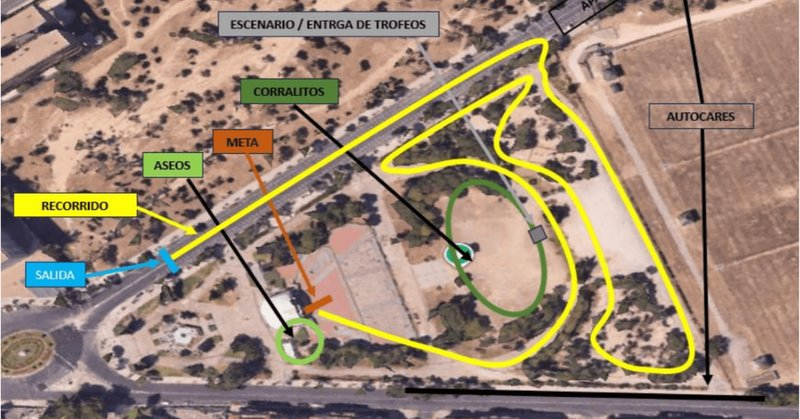

Cómo es el recorrido
- La salida está a la izquierda del plano, junto a la avenida.
- El circuito sigue la avenida y se adentra en el parque.
- Rodea la zona de corralitos, en el centro del parque.
- La meta está abajo a la izquierda, junto a los aseos.
Cross escolar de Hortaleza
Esta página explica cómo está organizado el cross escolar de Hortaleza: por dónde pasa el recorrido y dónde están la salida, la meta, los aseos, los corralitos, el escenario y los autocares.

| Zona | Para qué sirve | Dónde está en el plano |
|---|---|---|
| Salida | Punto donde empieza la carrera. | Extremo izquierdo, junto a la avenida. |
| Recorrido | Camino que siguen los corredores. | Línea amarilla por la avenida y el parque. |
| Meta | Punto donde termina la carrera. | Parte inferior izquierda, junto a los aseos. |
| Aseos | Servicios para participantes y público. | Junto a la meta. |
| Corralitos | Zonas acotadas para agrupar a los participantes. | Centro del parque, dentro del óvalo verde. |
| Escenario y entrega de trofeos | Lugar donde se entregan los premios. | Parte superior, hacia el centro. |
| Autocares | Zona reservada para los autocares. | Lado derecho del plano. |
| Información tomada del plano del evento. | ||